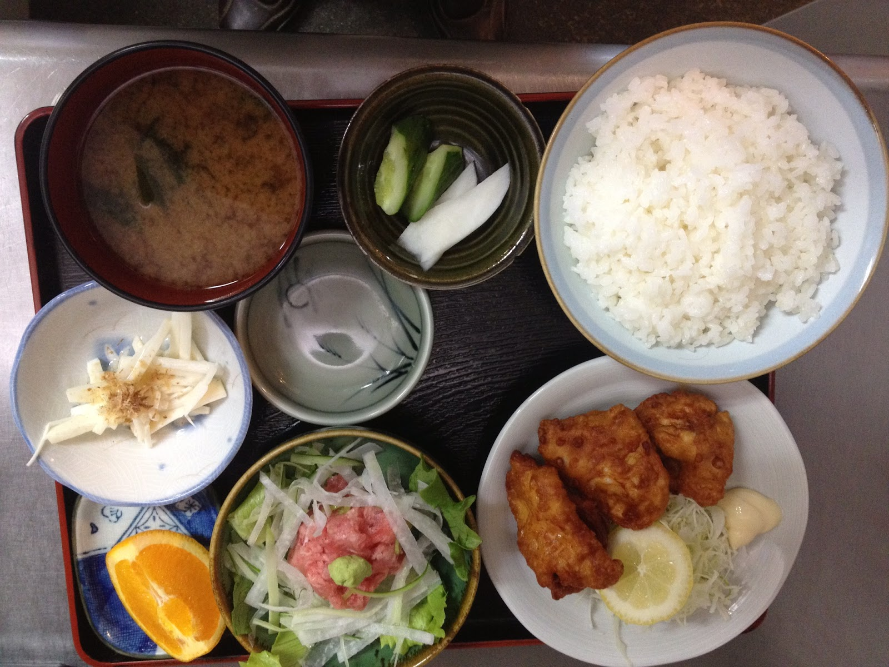

其の壱宿場食堂について
国道254号から少し入った、川越・古市場の食堂。
カウンターもお座敷もある広い店内に、
定食・麺類・丼のメニューがずらり。
お昼どきは地元の常連さんで賑わいます。

名物は、
レバーの生姜焼き。
クチコミでいちばん語られる一品。
其の弐お品書き
-
レバー生姜焼き定食
クチコミで評判の看板メニュー。ボリュームも好評です。
-
アジフライ定食
サクサクふわふわと評判のフライ。焼き魚の定食も揃います。
-
麺類・丼もの
ラーメンに焼きそば、カツ丼。海鮮やカレーまで幅広く。
このほか定食・麺類・丼が豊富に揃います。価格は店頭にてご確認ください。
其の参店舗案内
| 店名 | 宿場食堂 |
|---|---|
| 住所 | 埼玉県川越市古市場341-13 国道254号からふじみ野方向へ。お車が便利です |
| 電話 | 049-235-0389 |
| 営業 | 昼 11:00〜14:30ごろ／夜 17:00〜21:00ごろ ※最新の営業時間はお電話でご確認ください |
| 定休日 | 水曜日・木曜日 |
| 席 | カウンター・テーブル・お座敷 |
| 駐車場 | 10台 |
| 支払い | 現金のみ |
営業時間が変わる場合があります。
お出かけ前に、お電話でご確認を。